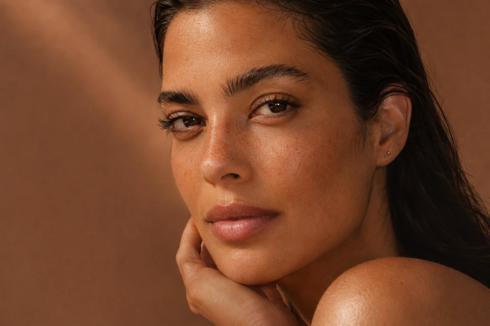
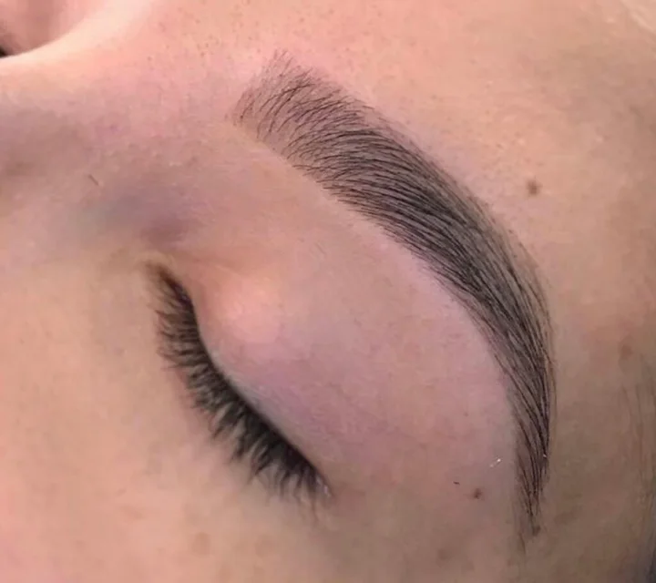

Capítulo 01 · A origem
Tudo começou juntas.
Em 2015, Bruna e Bianca começaram a trabalhar juntas com design de sobrancelhas. A Frida Studio nasceu desse primeiro passo.
Brasília Shopping · Asa Norte
Beleza que começa na escuta e respeita seus traços. Sobrancelhas, cílios, lábios, face e maquiagem — do seu jeito.

01 / Rituais Frida
Um olhar atento faz diferença. Explore o cuidado que combina com o seu momento.

OlharDesign de sobrancelhasUm desenho que respeita seus traços.Conhecer cuidado CíliosLash LiftingCurvatura para valorizar o olhar.Conhecer cuidado
CíliosLash LiftingCurvatura para valorizar o olhar.Conhecer cuidado
 LábiosHydra GlossHidratação, maciez e brilho.Conhecer cuidado
ExpressãoMaquiagemPara ocasiões e momentos especiais.Conhecer cuidado
LábiosHydra GlossHidratação, maciez e brilho.Conhecer cuidado
ExpressãoMaquiagemPara ocasiões e momentos especiais.Conhecer cuidado

02 / A essência
Antes de qualquer técnica, existe você: seus traços, suas escolhas e o jeito de se sentir bem.
Descubra seu cuidado03 / Nossos cuidados
Explore as técnicas e encontre um cuidado que faça sentido para o que você procura.
Ver referências visuaisO que você quer realçar? Se o nome da técnica ainda não diz muito, escolha pelo resultado que procura.
Do desenho ao alinhamento, encontre o cuidado que faz sentido para os seus fios.
Realce a curvatura dos cílios naturais.
Conheça as opções para hidratação, brilho e definição da cor.
Um olhar para os detalhes do rosto.
Conte à equipe qual é a ocasião e o acabamento que você tem em mente.
04 / Caderno visual
Texturas, acabamentos e expressões para olhar de perto. As fotografias são referências ilustrativas.
As fotografias acima são referências visuais ilustrativas, não registros verificados de antes e depois. Resultados de procedimentos variam conforme cada pessoa.
05 / Seu momento, suas escolhas
Não precisa saber o nome da técnica. Conte o que deseja realçar e, em até duas escolhas, encontre por onde começar.
06 / Seu tempo, seu cuidado
Escolha um cuidado, indique o período que prefere e pronto: sua mensagem fica preparada para a equipe no WhatsApp.
07 / A história por trás da Frida
O trabalho de Bruna e Bianca começou com sobrancelhas, em 2015. Essa atenção ao olhar continua presente em cada atendimento.
Capítulo 01 · A origem
Em 2015, Bruna e Bianca começaram a trabalhar juntas com design de sobrancelhas. A Frida Studio nasceu desse primeiro passo.
Capítulo 02 · A essência
No estúdio, a conversa vem antes da técnica. A equipe considera os traços, os desejos e as preferências de cada cliente.
Capítulo 03 · O presente
Hoje, os cuidados incluem sobrancelhas, cílios, lábios, face e maquiagem. Cada atendimento começa com uma escolha pessoal.
Encontrar meu cuidado“O atendimento é excelente, o ambiente super acolhedor.”
“Gosto da forma como sou bem recebida.”
08 / Tudo claro
As respostas essenciais para chegar com tranquilidade e escolher com segurança.
Use o formulário rápido da seção Agendamento para informar o procedimento e o período preferido, ou envie uma mensagem diretamente pelo WhatsApp. A equipe confirma valores, disponibilidade e horário com você.
Você pode começar pelo Guia Frida ou contar à equipe o que gostaria de realçar. A escolha é feita com orientação profissional.
O design trabalha o formato e os fios existentes. Nano Fios utiliza pigmento para criar traços finos que imitam os pelos.
Estamos no Brasília Shopping, na Torre Norte, sala 1030. Veja o endereço e abra a rota na seção abaixo.